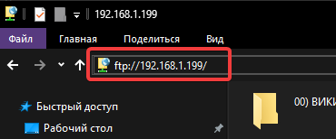

Техновики
Вся информация по специфическому ПО и оборудованию
Файловый сервер
Для подключения к FTP-серверу со всем софтом:
ftp://192.168.1.199

История версий
16.12.2025
- Доведение заглавной до ума.
- Создание шаблона для будущих страниц.
- Продолжение очистки файлов от вирусов.
18.11.2025
- Создание FTP-сервера.
- Создание шаблона для вики, начало оформления заглавной страницы.
- Начало попыток очистить файлы от Synaptics worm.